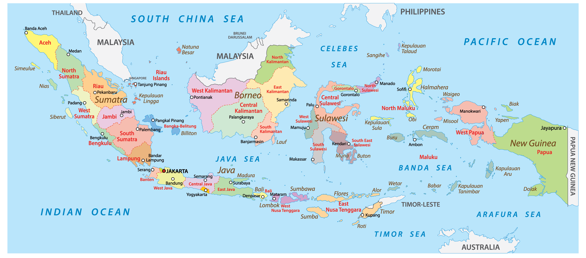

| About Me | Faculty | Country |
|  |
|
Indonesia dengan nama resmi Republik Indonesia (RI), atau lengkapnya Negara Kesatuan Republik Indonesia (NKRI), adalah negara kesatuan dengan bentuk pemerintahan republik berdasarkan Konstitusi Indonesia yang sah, yaitu Undang-Undang Dasar Negara Republik Indonesia Tahun 1945 (UUD 1945), dengan dasar negara Pancasila. Ibu kota negara Indonesia saat ini adalah Daerah Khusus Ibukota Jakarta (DKI Jakarta). Pada tanggal 18 Januari 2022, pemerintah menetapkan Ibu Kota Nusantara yang berada di Pulau Kalimantan, yang menempati wilayah Penajam Paser Utara, untuk menggantikan Jakarta sebagai ibu kota baru. Hingga saat ini, proses peralihan ibu kota masih sementara berlangsung. Indonesia merupakan sebuah negara kepulauan di Asia Tenggara yang dilintasi garis khatulistiwa dan berada di antara daratan benua Asia dan benua Australia, sehingga Indonesia dikenal sebagai negara lintas benua, serta antara Samudra Pasifik dan Samudra Hindia. Indonesia merupakan negara terluas ke-14 sekaligus negara kepulauan terbesar di dunia dengan luas wilayah sebesar 1.904.569 km², serta negara dengan pulau terbanyak ke-6 di dunia, dengan jumlah 17.504 pulau. Selain itu, Indonesia juga menjadi negara berpenduduk terbanyak ke-4 di dunia dengan populasi mencapai 270.203.917 jiwa pada tahun 2020, serta merupakan salah satu negara multiras, multietnik, dan multikultural di dunia. Indonesia berbatasan di wilayah darat dengan Malaysia di Pulau Kalimantan, dengan Papua Nugini di Pulau Papua, dan dengan Timor Leste di Pulau Timor. Negara tetangga yang hanya berbatasan laut dengan Indonesia adalah Singapura, Filipina, Australia, dan wilayah persatuan Kepulauan Andaman dan Nikobar di India. Indonesia terdiri dari berbagai suku bangsa, bahasa, dan agama. Berdasarkan rumpun bangsa, Indonesia terdiri atas bangsa asli pribumi yakni Austronesia dan Melanesia di mana bangsa Austronesia yang terbesar jumlahnya dan lebih banyak mendiami Indonesia bagian barat. Dengan suku Jawa dan Sunda membentuk kelompok suku bangsa terbesar dengan populasi mencapai 57% dari seluruh penduduk Indonesia. Semboyan nasional Indonesia, "Bhinneka Tunggal Ika" (berbeda-beda tetapi tetap satu tujuan), bermakna keberagaman sosial-budaya yang membentuk satu kesatuan negara. Selain memiliki populasi penduduk yang padat dan wilayah yang luas, Indonesia memiliki alam yang mendukung tingkat keanekaragaman hayati terbesar ke-2 di dunia. |
| Hari Kemerdekaan | 17 Agustus 1945 |
| Ibu Kota | Jakarta |
| Semboyan | Bhineka Tunggal Ika |
| Lagu Kebangsaan | Indonesia Raya |
| Agama yang diakui | Islam, Kristen Protestan, Katolik, Hindu, Buddha, dan Konghucu. |
| Letak Astronomis | 6° LU - 11° LS dan 95° BT - 141° BT |
| Letak Geografis |
|
|
Sebagai negara tropis, kepulauan, dan zona lingkar api, Indonesia tidak hanya makmur kekayaan alam namun juga kaya pemandangan alam. Keindahan wisata alam inilah yang membuat banyak turis asing atau mancanegara datang hingga ke pelosok Indonesia. Setiap pulau di Indonesia memiliki tempat wisata unik masing-masing bergantung pada kondisi geografi dan budaya daerah tersebut. Berikut tempat wisata Indonesia yang telah mendunia.Berikut merupakan beberapa tempat wisata meanrik di Indonesia : 1. Borobudur dan Candi Prambanan Kemegahan dan sejarah candi Borobudur telah dikenal dunia sejak lama. UNESCO bahkan menetapkan candi Borobudur dan candi Prambanan sebagai warisan dunia pada 1991. Di Prambanan kalian juga bisa menyaksikan pertunjukan sendratari Ramayana. 2. Gunung Bromo Kemegahan Gunung Bromo bak negeri atas awan membuatnya sebagai salah satu tempat wisata Indonesia yang mendunia. Negeri di atas awan mungkin ungkapan yang tepat menggambarkan pemandangan Bromo. Selain melihat megahnya gunung Bromo dari ketinggian, kamu juga bisa melihat kawah Bromo. 3. Labuan Bajo Eksotisme Pulau Padar di Labuan Bajo ini menjadikannya salah satu tempat wisata Indonesia yang mendunia. Labuan Bajo dengan Taman Nasional Komodonya telah mendunia sejak lama. Pulau Labuan Bajo sendiri memiliki tempat wisata menarik seperti Goa Batu Cermin, Air Terjun Cunca Wulang, Wae Rebo, Sawah Lingko, Gua Rangko, Pulau Padar, Pink Beach, Pulau Komodo. 4. Raja Ampat Raja Ampat adalah salah satu tempat wisata Indonesia yang mendunia. Ada 5 tempat tersohor yang ramai dikunjungi wisatawan yaitu Pianemo, Telaga Bintang, Wayag, Manta Point (Misool), dan puncak harfat. 5. Kepulauan Derawan Hamparan pasir putih yang mempesona, warna airnya yang sangat jernih akan menjadikan kita betah berlama-lama di kawasan ini. Panorama alam ini menjadi sajian liburan utama bagi wisatawan dalam berkunjung. Faktor lain yang menjadi alasan mengapa kawasan ini wajib untuk dikunjungi, yaitu ekosistem bawah laut dan keasrian alam sekitarnya benar-benar masih sangat terjaga. |